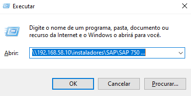
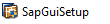
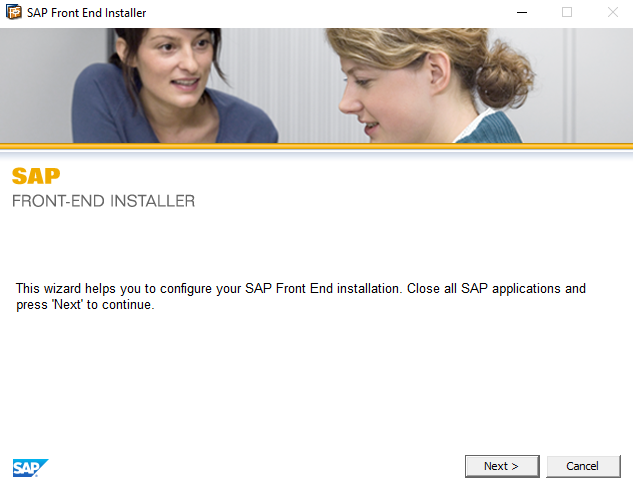
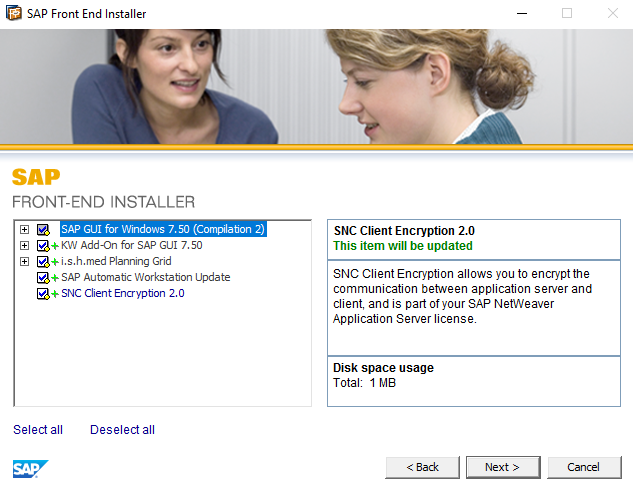
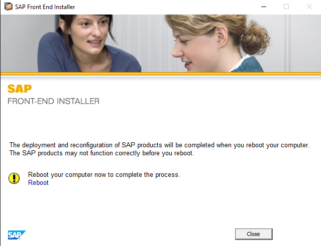

1. Pressione as teclas WINDOWS + R e digite o endereço: "\\192.168.58.10\instaladores\SAP\SAP 750\BD_NW_7.0_Presentation_7.50_Comp._2_\PRES1\GUI\WINDOWS\Win32" na caixa de texto
2. Execute o arquivo "SapGuiSetup"
3. Clique em Next
4. Selecione todos os Check Box
5. Clique em close e reinicie o computador
